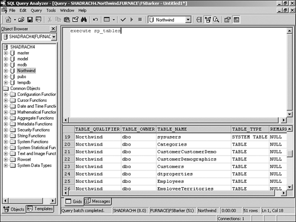

Create a Windows Form. Then place the controls shown in Figure 8.5 with the properties set forth in Table 8.4.
Table 8.4. Labels, ListBoxes, DataGrid, TextBox, and Command Button Controls Property Settings
Object
Property
Setting
Label
Name
Label1
Text
Tables
Label
Name
Label2
Text
Columns
Label
Name
Label3
Text
SQL String
Label
Name
Label4
Text
Data Display
ListBox
Name
lstTables
ListBox
Name
lstColumns
SelectionMode
MultiSimple
TextBox
Name
txtSQLString
MultiLine
True
Button
Name
btnView
DataGrid
Name
dgDisplay
Tip

Notice that the lstTables list box only allows the user to pick one table at a time, whereas lstColumns allows you to choose multiple columns.
A great enhancement to this tool would be to allow the user to select multiple tables and have the application figure out the relation between tables.
In the class module for the form, add the following Private declaration just below the line of code that reads Windows Form Designer generated code:
Dim mcnn As New OleDb.OleDbConnection(BuildCnnStr("(local)", "Northwind"))This line of code declares and assigns an OleDBConnection object that will be used throughout the form.
On the form, add the code in Listing 8.12 to the Load event. The first thing this code routine does is create a new OleDbCommand called ocmdTables and assign the built-in SQL Server stored procedure called sp_Tables. After establishing the CommandType as being CommandType.StoredProcedure and then opening the connection, the data reader called odrTables is created by calling the ExecuteReader method off ocmdTables.
Listing 8.12 frmHowTo8_3.vb: Executing a SQL Server-Supplied Stored Procedure That Lists the Tables in the Database
Private Sub frmHowTo3_8_Load(ByVal sender As System.Object, _ ByVal e As System.EventArgs) Handles MyBase.Load '-- Create the connection and specify the stored procedure to use. Dim ocmdTables As New OleDb.OleDbCommand("sp_Tables", mcnn) Dim odrTables As OleDb.OleDbDataReader Try '-- Specify the type of command being performed ocmdTables.CommandType = CommandType.StoredProcedure mcnn.Open() '-- Create the DataReader object odrTables = ocmdTables.ExecuteReader() '-- Loop through and add table-type object names ' to the lstTables list box. Do While odrTables.Read If odrTables.GetString(3) = "TABLE" Then Me.lstTables.Items.Add(odrTables.GetString(2)) End If Loop mcnn.Close() Catch excpData As Exception MessageBox.Show("Error Occurred: " & excpData.Message) End Try End SubNext, the code loops though each of the items returned by the command. Those of type TABLE are added to the lstTables items. Then the connection is closed.
As mentioned, you will see a comparison to the literal "TABLE." The reason for this is that the fourth column returned is the same table type as the current table. The other two types are SYSTEMTABLE and VIEW. To see the data returned by the sp_tables stored procedure, open the Query Analyzer, located on the Start menu, in Programs, Microsoft SQL Server. After opening up the Query Analyzer, highlight the Northwind database, and then type execute sp_tables into the Query Edit window and press F5 to execute the query. The results will be shown in the bottom of the window. Page down through the data until you see some of the type "TABLE" (see Figure 8.6).
Figure 8.6. Testing the built-in stored procedure called sp_tables.

On lstTables, add the code in Listing 8.13 to the SelectedIndexChanged event. This routine performs a similar feat to the previous routine in that it calls a built-in stored procedure-in this case, sp_Columns. However, the next task in this step is to pass a parameter, TableName, which is the table chosen in lstTables. After the connection is opened, the data reader called odrColumns is loaded with the ExecuteReader command. After the lstColumns.Items.Clear() method is called to clear the list, the new columns are added to lstColumns Items collection. Last, the connection is closed.
Listing 8.13 frmHowTo8_3.vb: Executing a SQL Server Built-In Stored Procedure That Lists the Columns of a Supplied Table in the Database
Private Sub lstTables_SelectedIndexChanged(ByVal sender As System.Object, ByVal e As System.EventArgs) Handles lstTables.SelectedIndexChanged '-- Create the connection and specify the stored procedure to use. Dim ocmdColumns As New OleDb.OleDbCommand("sp_Columns", mcnn) Dim odrColumns As OleDb.OleDbDataReader Try '-- Specify the type of command being performed ocmdColumns.CommandType = CommandType.StoredProcedure ocmdColumns.Parameters.Add("@TableName", Me.lstTables.Text) mcnn.Open() '-- Create the DataReader object odrColumns = ocmdColumns.ExecuteReader() '-- Clear the current items in the list Me.lstColumns.Items.Clear() '-- Loop through and add table type object names ' to the lstTables list box. Do While odrColumns.Read Me.lstColumns.Items.Add(odrColumns.GetString(3)) Loop mcnn.Close() Catch excpData As Exception MessageBox.Show("Error Occurred: " & excpData.Message) End Try End SubOn lstColumns, add the code in Listing 8.14 to the SelectedIndexChanged event. This routine iterates through the SelectedItems collection of the lstColumns ListBox control, adding the chosen column names to a string variable called strTemp. The length of the string is checked; if the length is greater than 0, the Text property of txtSQLString is set to the following expression: "Select " & strTemp & " From " & Me.lstTables.Text.
Listing 8.14 frmHowTo8_3.vb: Creating the SQL String
Private Sub lstColumns_SelectedIndexChanged(ByVal sender As System.Object, ByVal e As System.EventArgs) Handles lstColumns.SelectedIndexChanged Dim strTemp As String Dim intNumColumns As Integer Dim oCurr As Object '-- Cycle through each of the selected columns of the table chosen ' and combine them into a string. For Each oCurr In Me.lstColumns.SelectedItems() If Len(strTemp) > 0 Then strTemp &= ", " End If strTemp &= oCurr Next '-- Take the string created and add it to the table ' name for a SQL String ' if columns are chosen. If Len(strTemp) = 0 Then Me.txtSQLString.Text = "" Else Me.txtSQLString.Text = "Select " & strTemp & " From " & _ Me.lstTables.Text End If End SubOn btnView, add the code in Listing 8.15 to the Click event. This routine creates the new data adapter called odaDisplay passes the Text property of txtSQLString, and then fills the dtDisplay data table. dtDisplay is then set to the DataSource property of the data grid called dgDisplay.
Listing 8.15 frmHowTo8_3.vb: Loading the DataGrid Control with the Specified Data
Private Sub btnView_Click(ByVal sender As System.Object, _ ByVal e As System.EventArgs) Handles btnView.Click Dim odaDisplay As OleDb.OleDbDataAdapter Dim dtDisplay As New DataTable() Try '-- Take the txtSQLString text and create a data table; then set the ' data source of the data grid. odaDisplay = New OleDb.OleDbDataAdapter(Me.txtSQLString.Text, mcnn) odaDisplay.Fill(dtDisplay) Me.dgDisplay.DataSource = dtDisplay Catch excData As Exception MessageBox.Show(excData.Message) End Try End Sub